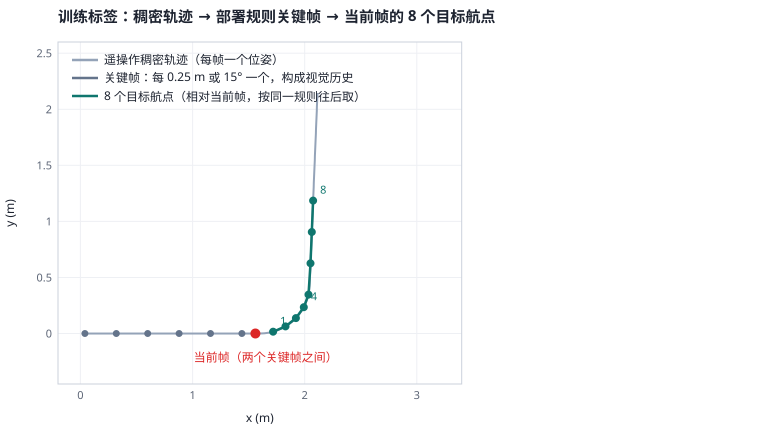

NavGPT VLA 训练工程：功能详解
navgpt_sft（train/）：在官方 NavGPT3-4B/8B 权重上，用 G1-D 的真实数据做 LoRA 后训练，并直接产出可部署的 checkpoint
1. 一页纸总结
navgpt_sft 的定位是：把 NavGPT VLA 从 Habitat 仿真分布适配到 G1-D 的真实相机和场景，同时尽量不破坏原模型的能力，并且训练结果不需要改动任何部署代码就能上线。
2. 为什么要后训练、为什么这样训
官方模型卡写明：模型只在 Habitat 仿真（R2R-CE、RxR-CE）中训练和评测，“其他机器人需要自己的尺度和测试”。G1-D 与训练分布之间至少有这些差距：真实相机的成像（曝光、畸变、视场角）、单目输入（仿真主结果用四视角）、场景外观、差速底盘的运动方式、部署时的历史帧节奏（关键帧 + 非关键帧当前观测）。
| 设计选择 | 原因 |
|---|---|
| 语言模型加 LoRA，不全量微调 | 真实数据量通常只有几百到几千个 episode，全量微调 8B 参数容易过拟合、遗忘仿真能力；LoRA 可训练参数少，单卡 5090 就能训 4B |
| 动作头全量训练 | 动作头只是两层 MLP，参数很少，直接决定航点尺度和形状，是适配新具身最直接的位置 |
| 视觉编码器冻结（嵌入层、LM head 也冻结） | 保留 LocateAnything 等大规模 grounding 训练得到的视觉能力；真实图像的分布差异交给语言模型上的 LoRA 去吸收；显存更省 |
| 动作头学习率 1e-4，论文为 1e-3 | 论文的 1e-3 是从零训练动作头；这里在已训练好的头上微调，用小学习率避免破坏已有映射 |
| 仿真回放数据占 20% | 防止灾难性遗忘：单视角的 R2R-CE/RxR-CE 样本让模型保留仿真中学到的导航能力 |
| 导出为完整 checkpoint | 部署端（serve_vla.py、上游 load_from_pretrained）完全不用改，换一个 --checkpoint 路径即可 |
3. 训练什么、冻结什么（model.add_lora）
具体步骤：先把所有参数设为不可训练，再用 PEFT 按正则 .*language_model\.layers\.\d+\.(?:self_attn|mlp)\.(?:q_proj|…) 注入 LoRA（bias 不训练），最后把动作头转成 fp32 并设为可训练。注入完成后会做两项自检：除 lora_ 和动作头以外不允许有可训练参数；视觉塔的参数必须全部冻结，违反就直接报错。
优化器为 AdamW，分成两个参数组：lora（lr_lora）和 action_head（lr_action_head），可以分别设置学习率。基座按 bf16 加载，加载方式与上游 load_from_pretrained 一致：先过 validate_checkpoint，再检查权重缺失或多余，有任何不匹配都报错。
4. 数据格式
4.1 导航 episode（kind: nav）
manifest 是 JSONL 文件，每行一个 episode，图像路径相对 manifest 所在目录：
{"episode_id": "g1d_0001",
"instructions": ["Leave the lab, turn left and stop at the meeting room door.", "..."],
"frames": [{"image": "frames/00000.jpg", "pose": [x, y, yaw]}, ...]}pose：拍照时刻的里程计位姿，x、y 单位米，yaw 单位弧度，逆时针为正。- 帧可以是稠密的（遥操作时按几 Hz 录制），也可以是已经取好的关键帧（每个 Habitat 动作一帧，或部署时提交的帧）。稠密帧更有价值：它能提供“两个关键帧之间的当前帧”样本（见第 6 节）。
- 可以写多条指令（
instructions），训练时每次随机选一条，用于增加语言多样性。 - 图像必须和部署时 VLA 看到的完全一致：teleimager 左目、居中裁方、400×400，即
navgpt_g1d.camera.preprocess的输出。 - 多相机（
nav.view_num: 4）时，每帧写"images": [front, right, back, left]。 - 少于 2 帧的 episode 会被跳过；图像数与
view_num不符、位姿不是 3 维、没有指令，都会报错并指出行号。
4.2 视觉语言样本（kind: vl，只训练 next-token）
{"images": ["img/0001.jpg"],
"conversations": [{"role": "user", "content": "<image>\nWhere is the trash can?"},
{"role": "assistant", "content": "Left of the door."}]}用于部署现场的地标问答、目标定位，让模型认识“会议室门”“垃圾桶”这类指令里出现的现场物体。<image> 占位符的数量必须等于图像数，并且至少要有一轮 assistant 回答，否则报错。
4.3 部署日志转数据（g1d_logs.py）
navgpt_g1d 每次运行会保存 events.jsonl，以及每个提交帧的 400×400 JPEG（frames/<seq>.jpg，正是 VLA 看到的那张图）。from-g1d-logs 从 start 事件取指令，从 result 事件取结果，从 commit=true 的 reply 事件取 capture_pose，拼成 episode。
arrived 的运行，转换后还应人工复核：模型“到达”了，并不等于走对了。可以用 --status 指定要保留的结果，--any-status 保留全部，--instruction 统一替换指令。日志里只有提交帧，所以这类数据不产生“非关键帧当前观测”样本。5. 航点标签的生成（episodes.py）

episodes.py 直接生成。灰线为稠密轨迹；灰点为按部署规则取出的关键帧（视觉历史）；红点为两个关键帧之间的一个当前帧；绿点为它的 8 个目标航点。关键帧（视觉历史）
与部署端 Navigator.next_request 完全相同的规则：从第 0 帧开始，当相对上一个关键帧移动 ≥ keyframe_m=0.25 m 或转动 ≥ keyframe_rad=15° 时，记为新关键帧。比较时留有 1e-3 的相对余量，让 Habitat 中恰好 15° 的转向也能通过写成 0.2618 的阈值。
目标航点
对当前帧 i，从它往后扫描：每当某个后续位姿相对上一个目标点（初始为当前位姿）移动或转动了一个关键帧步长，就把它记为下一个目标点，相当于一次 Habitat 动作。取满 8 个为止。所有目标点都表达在当前帧的机体系下（累积量，+x 前、+y 左、θ 逆时针）：
episode 的最终位姿总会作为最后一个目标点加入（即使不足一个步长）；不足 8 个时用最终位姿补齐，这就是“停止”的样子，和部署端用来判断到达的“视野收敛”相对应。最后除以具身尺度 nav.scale=(1.0, 0.433, 2.094)，即 habitat_nav，和 serve_vla.py 的反归一化一致，得到 24 维训练目标。
运动类别与重采样
| 类别 | 判定 | 默认采样权重 |
|---|---|---|
| stop | 最后一个航点距离 < 0.25 m 且角度 < 30°（与部署的到达判定相同） | 2.0 |
| turn | 任一航点 |θ| ≥ 30°，或最后一个航点横向偏移 ≥ 0.3 m | 2.0 |
| straight | 其余 | 1.0 |
原始轨迹以直行为主。按类别提高停止和转弯样本的采样概率，可以纠正“只会往前走、不会停”的倾向（论文也提到模型容易欠预测停止）。
6. 样本构造：与部署逐项对齐（episodes.make_sample、data.NavSource）
这个工程最重要的原则是：训练时模型看到的输入，与部署时逐字节对齐。
| 环节 | 训练中的做法 | 对应的部署行为 |
|---|---|---|
| Prompt | 直接调用上游 NavGPTVLA.PROMPT_TEMPLATE、_build_image_describe（“Time step k Front View <image>”）和 build_prompt | NavGPTVLA.predict_inference |
| 图像与 token 分配 | 上游 NavGPT3Processor（PIL 后端），走与 frame_cache=on_demand 相同的逐图预算路径，含 codec 变化分数 | serve_vla.py（3072 预算、γ=2、每图 4–196 token、codec 开启） |
| 历史采样 | 最多 16 帧，保留首帧和当前帧，中间不放回均匀抽取（同 sample_indices）；p_latest 为 0 | sample_mode=random |
| 当前帧 | 50% 的样本取两个关键帧之间的某一帧作为当前观测，历史仍是此前的关键帧，目标从该帧重新计算 | 部署中 commit=false 的请求 |
| 动作输出 | 训练 forward 取最后一个 prompt token（右填充，位置 = attention_mask 之和 − 1）→ 动作头 | predict_actions；test_pipeline.py 检查两者在 bf16 舍入范围内一致 |
| 停止 | 终点补齐的航点 + 类别重采样 | 连续两次视野收敛判定到达 |
数据增强
- 视觉预算随机化：30% 的训练样本把总预算随机取在 [1024, 4096]、时间衰减 γ ∈ [1, 3]、每图上限 ∈ [128, 256]，其余 70% 用部署值。论文训练时也随机化预算，以覆盖 codec 起作用的区间。
- 颜色抖动：亮度、对比度、饱和度各在 ±10% 内随机。同一样本的所有历史帧使用同一组系数，避免帧间出现虚假的“变化”而干扰 codec 打分。
- 指令随机选取：多条指令的 episode 每次随机选一条。
- 验证集关闭全部随机性：部署预算、无抖动、当前帧固定为关键帧、种子固定。
视觉语言样本的标签
对话按 Qwen 对话模板拼接：<|im_start|>role\n内容<|im_end|>\n，<image> 替换为视觉占位符。assistant_labels 只保留 assistant 回答（含结尾的 <|im_end|>）作为标签，提示词和填充位置都设为 −100。test_pipeline.py 断言解码出的标签恰好是 “Left of the door.<|im_end|>”。这类样本的图像每张最多 256 token，关闭 codec；导航目标置零并屏蔽。
7. 数据混合与采样（data.MixtureSampler）
| 数据源（4B/8B 默认配置） | 类型 | 权重 | 作用 |
|---|---|---|---|
g1d_teleop | nav | 0.6 | 遥操作示范：稠密帧 + 里程计，主力数据 |
g1d_runs | nav | 0.1 | 成功的自主运行（from-g1d-logs） |
sim_replay | nav | 0.2 | 单视角 Habitat R2R-CE/RxR-CE，防遗忘 |
scene_vl | vl | 0.1 | 部署现场图像上的地标问答 / 定位 |
- 每个 epoch 先按权重抽数据源，再在源内按运动类别权重抽样本；每个样本分配一个独立的随机种子，所以历史采样和增强都可复现。
- 每个 epoch 的样本数默认等于所有数据源的样本总数（
samples_per_epoch可覆盖），并对齐到 batch × 梯度累积的整数倍。 - 多卡时每个 rank 由 (seed, epoch) 得到同一个抽样序列，各取自己的跨步子序列，不需要
DistributedSampler。 - 断点续训时，按已完成的步数跳过本 epoch 已消费的样本，接着往下训。
- 验证用
EvalSampler：每个样本恰好一次，种子固定，按 rank 分片。 - 批内右填充；图像 patch 和 grid 沿第 0 维拼接（每张图的 token 数不同）。
8. 损失函数（model.NavGPT3SFT，论文 Eq. 5）
- 导航样本：只算 24 维归一化航点的 MSE，不算 next-token 损失。
- 视觉语言样本：只算 assistant 回答 token 的交叉熵（右移一位）。导航目标为零向量并被
nav_mask屏蔽，不会被当成“原地不动”去学习。 - 交叉熵只在被标注的位置上过 LM head，不对整段序列计算 logits，节省显存。
- 动作头在 fp32 下计算，基座在 bf16 下前向。
9. 训练循环（trainer.train）
| 项 | 做法 |
|---|---|
| 框架 | Hugging Face Accelerate。单卡直接运行；多卡用 accelerate launch --num_processes N，每张卡一份完整模型（DDP），适合 LoRA |
| 显存 | gradient checkpointing（use_reentrant=False），关闭 KV cache，batch 1 + 梯度累积 16 |
| 学习率 | 余弦调度，前 3% 线性预热；LoRA 与动作头各自的学习率（默认都是 1e-4） |
| 梯度 | 只在同步步裁剪（max_grad_norm = 1.0），只针对可训练参数 |
| 日志 | 每 10 步写 log.jsonl：总损失、导航损失、NTP 损失、梯度范数、每步耗时、峰值显存、各组学习率；开头记录数据统计（各源样本数、类别分布）与参数量 |
| 评估 | 每 200 步在验证集上评估一次（第 10 节的指标），并写入日志 |
| 保存 | 每 500 步和结束时保存 checkpoint-<step>/，最多保留 3 个 |
| 断点续训 | --set train.resume=<checkpoint>：恢复 adapter、动作头、优化器、调度器和步数，采样器跳过已消费的样本 |
checkpoint-<step>/ 的内容：adapter/（PEFT 格式的 LoRA）、action_head.safetensors、trainer_state.pt（优化器、调度器、步数）、sft_config.yaml（完整配置）、metrics.json（最近一次评估结果）。不包含基座权重，体积远小于完整模型。按 4B 的结构估算：r=32 的 LoRA 约 6600 万参数，再加上 AdamW 状态，一个 checkpoint 在 1 GB 量级。
10. 离线评估（trainer.evaluate）
| 指标 | 含义 |
|---|---|
mse | 归一化空间的 MSE（与训练损失可比） |
wp1_pos_m / wp8_pos_m | 第 1 / 第 8 个航点的位置误差（米）：近处的执行精度 / 1 m 视野末端的方向判断 |
wp1_yaw_deg / wp8_yaw_deg | 第 1 / 第 8 个航点的朝向误差（度） |
arrival_precision / arrival_recall | 按部署规则判断“到达”的精确率与召回率：精确率低会提前停，召回率低会冲过头 |
eval 子命令不加 --adapter 时评估原始基座，作为基线；加上 --adapter checkpoint-N 评估微调结果，可以直接比较“微调前后”在 G1-D 验证集上的差异。--manifest 可以换别的验证集。
11. 合并与部署（export.merge）
- 严格加载基座（默认在 CPU 上，SDPA）；
- 载入 LoRA，执行
merge_and_unload，把 LoRA 并回原权重； - 载入训练好的动作头，转换为基座的 dtype；
save_pretrained，按 5 GB 分片；- 从基座目录原样拷贝配置、tokenizer、processor 等非权重文件（架构不变）；另存
sft_metrics.json、sft_config.yaml，以及记录来源的sft_provenance.json； - 用上游
validate_checkpoint校验。
python -m navgpt_sft merge --config train/configs/g1d_lora_4b.yaml \
--checkpoint outputs/sft/g1d_lora_4b/checkpoint-1200 --out models/NavGPT3-4B-g1d
CHECKPOINT=models/NavGPT3-4B-g1d GPU=0 deploy/g1d/scripts/start_vla_server.sh端到端测试 test_pipeline.py（需要在装有 torch/PEFT 的 VLA 环境里运行）会检查：合并后的模型能被上游严格加载器加载；它的 predict_actions 输出与“基座 + adapter”的训练前向一致（误差 < 0.05）；并且与原基座确实不同（说明训练生效）。
12. 命令行与配置
| 命令 | 作用 |
|---|---|
python -m navgpt_sft inspect --config CFG [--show N] | 每个 manifest 的 episode 数、样本（关键帧）数、平均/最大关键帧数、缺失图像数、类别分布，以及若干随机样本的历史帧与航点（米、米、度） |
python -m navgpt_sft train --config CFG [--set section.key=value ...] | 训练；--set 临时覆盖任意配置项 |
python -m navgpt_sft eval --config CFG [--adapter DIR] [--manifest M] | 离线评估基座或微调结果 |
python -m navgpt_sft merge --checkpoint DIR --out DIR [--config CFG | --base DIR] [--device cpu] | 合并为完整 checkpoint |
python -m navgpt_sft from-g1d-logs LOGS... --out M [--status S] [--any-status] [--instruction T] | 部署日志转 manifest |
配置文件（train/configs/）
| 段 | 关键项（4B 默认） |
|---|---|
model | checkpoint: models/NavGPT3-4B，attn_implementation: null（有 flash-attn 则用，否则 SDPA），gradient_checkpointing: true |
lora | r: 32，alpha: 64，dropout: 0.05，7 类目标模块 |
data | 四个训练源及权重；验证集 data/sft/g1d_teleop/val.jsonl |
nav | view_num: 1、关键帧 0.25 m / 0.2618 rad、scale、max_sample_size: 16、p_off_keyframe: 0.5、部署预算与随机化范围、color_jitter: 0.1、resample |
train | epochs: 3，batch_size: 1，grad_accum: 16，lr_lora / lr_action_head: 1e-4，warmup_ratio: 0.03，eval_steps: 200，save_steps: 500 |
g1d_lora_8b.yaml 只覆盖少数几项（基座路径、输出目录、num_workers: 6），其余沿用默认值。配置加载会拒绝未知的段或键，并列出合法键；YAML 把 1e-4 读成字符串时按字段类型转成数字；还会检查：数据源类型只能是 nav/vl、权重为正、scale 为 3 维、相机名称和权重的个数等于 view_num、最小 token 总数不超过预算。
13. 测试（train/tests/）
| 测试 | 内容 | 依赖 |
|---|---|---|
test_episodes.py | 稠密直线的关键帧、Habitat 15° 转向通过阈值、直行目标与停止补齐、不足一步的末段保留、目标在机体系、原地转向、归一化、类别、历史采样保留首尾、非关键帧当前帧、manifest 相对路径 | 纯 Python |
test_config_and_logs.py | 自带配置可加载、未知键与覆盖、日志转换只保留到达且有提交帧的运行 | 纯 Python |
test_pipeline.py | 在 CPU 上构建随机初始化的微型 NavGPT3，依次跑训练 → 评估（基座 vs adapter）→ 断点续训 → 合并 → 严格加载，并核对合并前后输出一致；另验证 VL 标签只覆盖回答 | torch、transformers、peft、accelerate、torchvision，以及 Qwen3-VL 的 tokenizer/processor 文件（models/_qwen3vl_tok） |
test_pipeline.py 的 2 项因本机没有 torch/PEFT 而跳过，需要在 5090 主机的 VLA 环境里运行。cd train && python -m unittest discover -s tests14. 数据闭环与使用建议
- 先测基线：用 G1-D 遥操作数据做验证集，
eval评估原始基座，记下航点误差和到达 P/R。 - 采集遥操作示范：用 navgpt_g1d 同样的相机预处理保存 400×400 图像，并以几 Hz 的频率记录拍照时刻的里程计位姿；每条轨迹配 1–3 条英文指令。覆盖各种转弯、停在不同目标前、走廊、门口、人多等场景。
- 检查数据：
inspect确认没有缺图，停止和转弯样本不至于过少，示例航点的方向与指令相符。 - 训练 4B：单卡 5090 先训 4B，观察
log.jsonl里的验证指标；对比基线的提升确认有效后，再考虑 8B。 - 合并部署：合并后用 navgpt_g1d 实跑，再用
report和成功率评估。 - 闭环：把成功（并经人工复核）的自主运行用
from-g1d-logs转成数据，加入g1d_runs，进入下一轮训练。
15. 注意事项
- 图像一致性最关键：训练图像的裁剪、尺寸、左右目必须和部署完全一致。更换相机或改了裁剪方式，都要重新采集或转换数据。
- 指令语言：基座只在英文指令上评测过，训练数据建议以英文为主；中文指令需要足够的数据量才能学会。
- 部署参数联动：
nav.keyframe_m/rad、nav.scale、预算参数要和deploy/g1d/config/g1d.yaml、serve_vla.py的参数保持一致，否则训练分布和部署分布会错开。 - 8B 显存：单张 32 GB 的 5090 训 8B 比较紧张（BF16 权重就有约 17.6 GB）。先训 4B；8B 用 80 GB 卡，或者多卡 DDP。
- RTX 5090 环境：需要 CUDA 12.8 版的 PyTorch（2.7 起）；
scripts/setup_gpu_server.sh会自动处理，并把本包与 PEFT 装进code/NavGPT-3/.envs/vla。FlashAttention-2 不一定支持 sm_120，这时会自动使用 SDPA。 - 许可证：NavGPT3 权重为 AGPL-3.0，基于它微调的权重同样受约束，对外分发或提供服务前需要评估。
- 日志数据的偏差：自主运行数据会强化模型已有的行为，比例不宜过高（默认 10%），而且必须人工筛选。